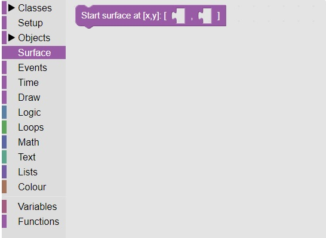
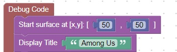

<h1>Set the upper left location of the pygame application</h1>
This block (which is located in surface) will set the start position of the application<br>
<br>
This is an example call to set the surface start location.   <br>
<br>
<hr>
<center></center>